Engranaje conducido del contraeje
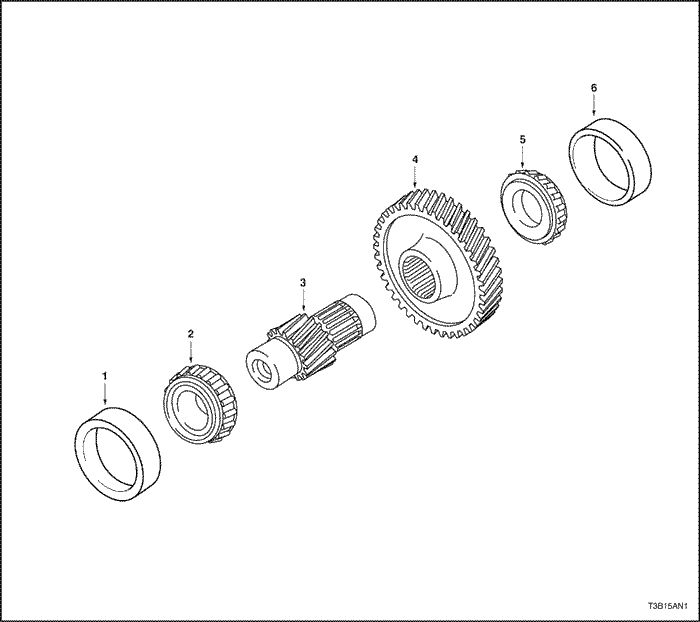


- Aro de rodamiento externo del cojinete de rodillos cónicos
- Cojinete cónico de rodillo
- Piñón del contraeje impulsor
- Engranaje conducido del contraeje
- Cojinete cónico de rodillo
- Aro de rodamiento externo del cojinete de rodillos cónicos

Herramientas necesarias
DW240-160 Adaptador de la pista exterior del cojinete de rodillos cónicos de la carcasa de la caja de cambios
DW240-170 Mango del adaptador
Procedimiento de desmontaje
- Desmonte el cojinete de rodillos cónicos, del costado de la carcasa de la caja de cambios, con un extractor apropiado.
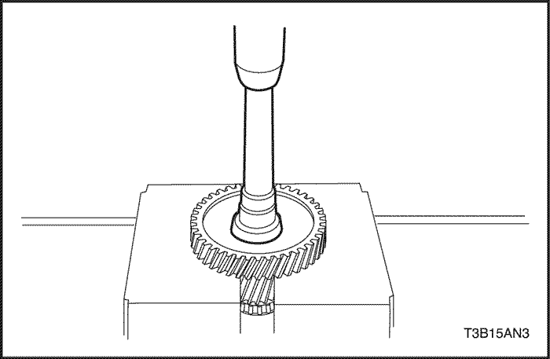
- Desmonte el engranaje conducido del contraeje, con una prensa.
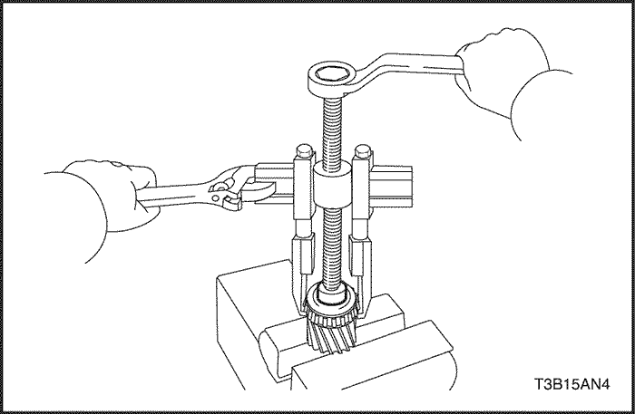
- Con un extractor apropiado, retire el cojinete cónico de rodillo.
- Desmonte la pista exterior del cojinete de rodillos cónicos y la arandela de ajuste, de la carcasa de la caja de cambios, con un extractor apropiado.
- Desmonte la pista exterior del cojinete de rodillos cónicos, de la carcasa de la caja de cambios, con un extractor apropiado.

Procedimiento de montaje
- Monte una pista exterior nueva para el cojinete de rodillos cónicos, en la carcasa de la caja de cambios.
Aviso: Meta a presión la pista exterior del cojinete de rodillos cónicos hasta que haga contacto con la carcasa de la caja de cambios.

- Monte la arandela de ajuste en la carcasa de la caja de cambios.
- Primero instale un asiento del mismo espesor que el anterior.
- Monte una pista exterior nueva para el cojinete de rodillos cónicos en la carcasa de la caja de cambios, utilizando el adaptador de pista exterior del cojinete de rodillos cónicos DW240-160 y el mango adaptador DW240-170.
Aviso: Meta a presión la arandela de ajuste hasta que haga contacto con la carcasa de la caja de cambios.
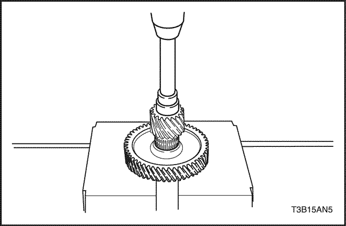
- Monte el engranaje conducido del contraeje, con una prensa.
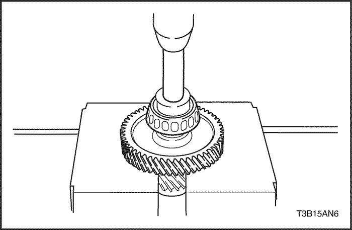
- Monte un cojinete de rodillos cónicos nuevo en el costado de la carcasa de la caja de cambios, utilizando una prensa.
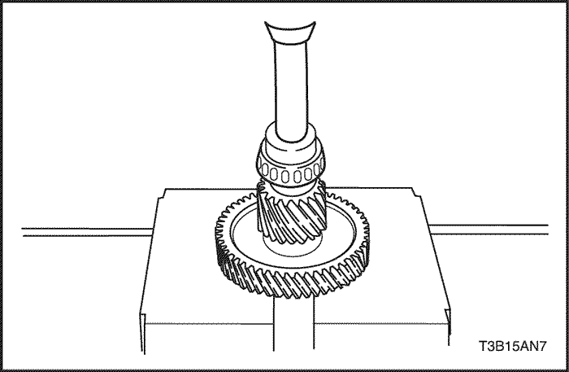
- Monte un cojinete de rodillos cónicos nuevo en el costado de la carcasa de la caja de cambios, utilizando una prensa.
Cuerpo de válvula
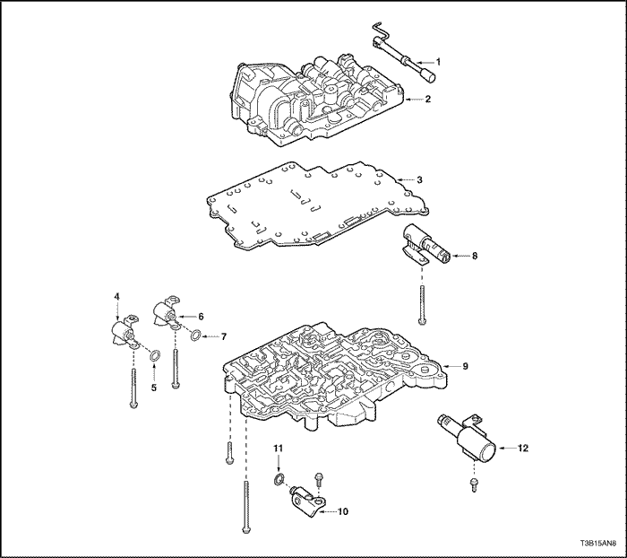
- Válvula manual
- Cuerpo superior de válvulas
- Placa del cuerpo de válvula
- Válvula de solenoide nº 1
- Junta tórica
- Válvula de solenoide nº 2
- Junta tórica
- Válvula solenoide de control de presión
- Cuerpo de válvula inferior
- Válvula solenoide de sincronización.
- Junta tórica
- Válvula solenoide de bloqueo
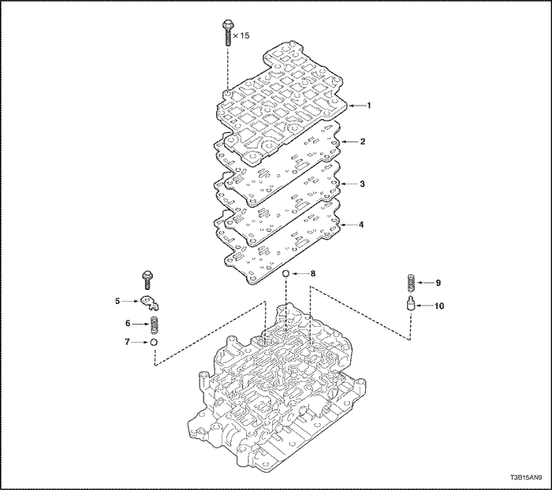
- Tapa
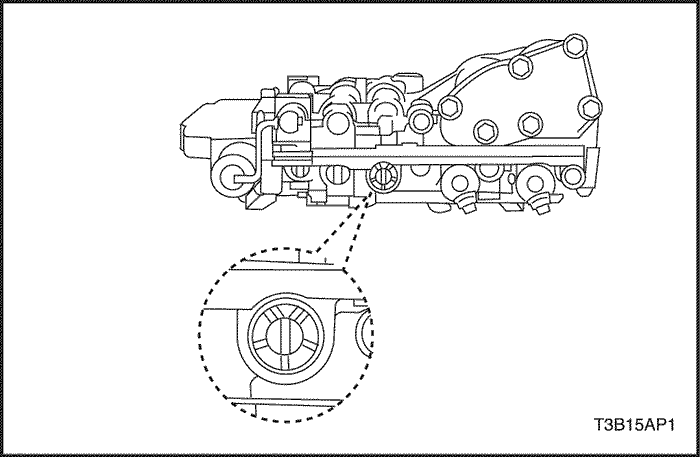
Procedimiento de desmontaje
- Tome nota de las posiciones relativas del manguito de la válvula primaria de regulación, del tapón y el pasador.
Aviso: Asegúrese de verificar la posición, ya la presión de funcionamiento cambia según la ubicación del pasador y la ranura en el extremo del manguito.
- Retire la válvula manual.
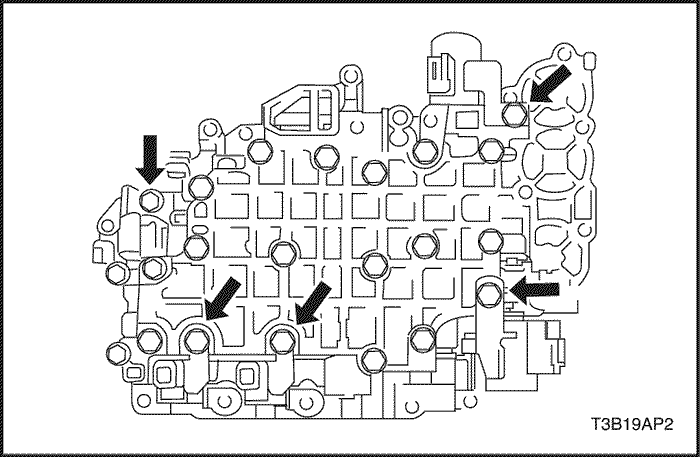
- Desmonte los 5 tornillos y las 5 válvulas solenoides del cambio de marchas.
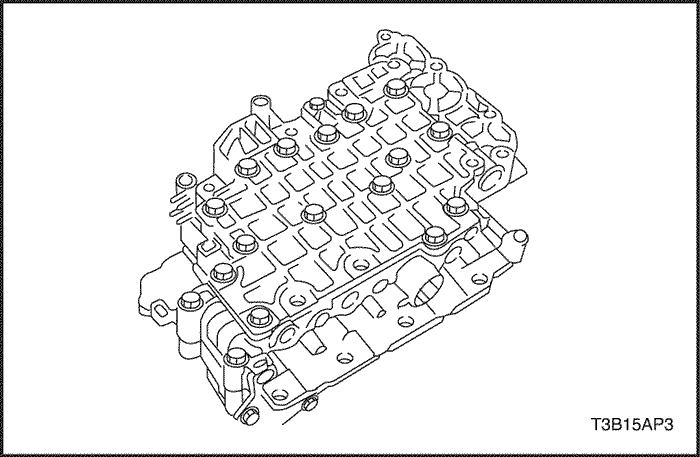
- Desmonte los 15 tornillos.
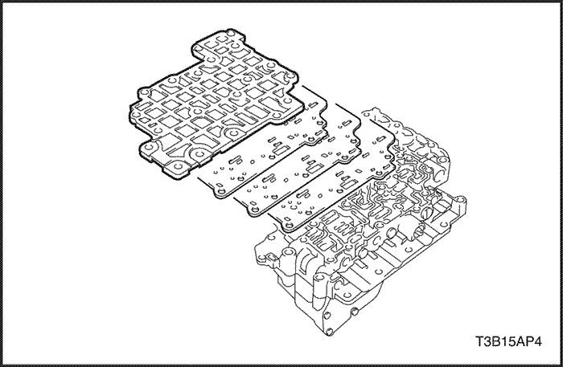
- Desmonte la tapa, las 2 juntas y la placa.
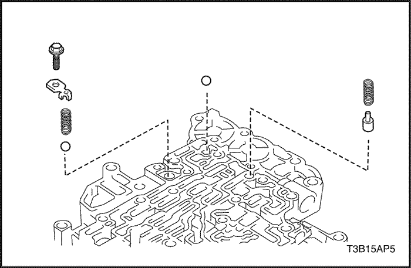
- Desmonte el muelle, la válvula antirretorno y la bola antirretorno.
- Desmonte el tornillo, el asiento del muelle, el muelle y la bola.
- Voltee el cuerpo de válvulas.
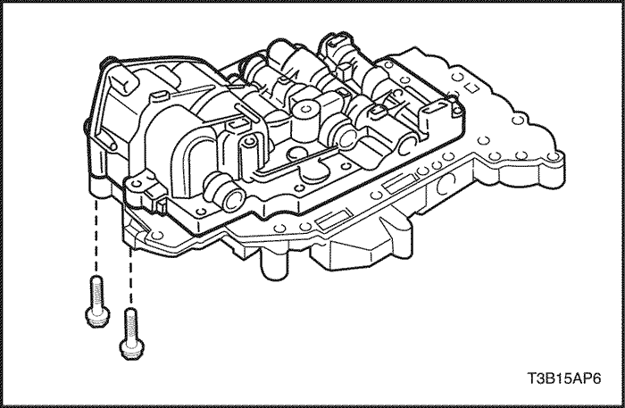
- Desmonte los 2 tornillos del cuerpo de válvulas.
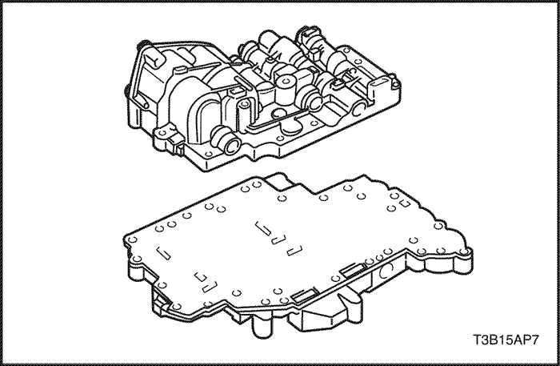
- Retire el cuerpo superior de válvulas del cuerpo inferior con placa.

- Retire la placa del cuerpo de válvulas del cuerpo inferior.
Aviso: Tenga cuidado de no dejar caer las bolas antirretorno.
Procedimiento de montaje
- Instale la placa del cuerpo de válvulas al cuerpo inferior.
- Instale el cuerpo superior de válvulas al cuerpo inferior con placa.
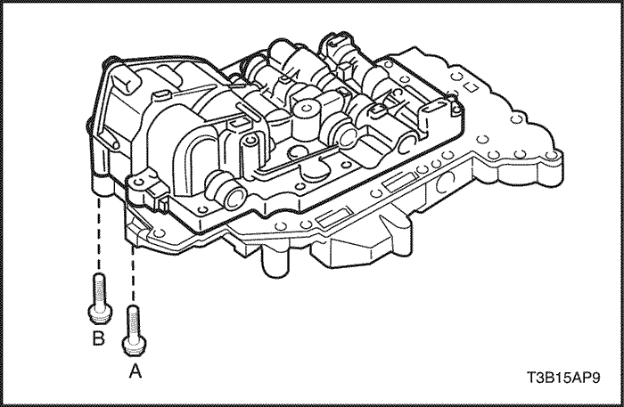
- Monte los 2 tornillos en el cuerpo de válvulas.
Apretar
Apriete los tornillos a 11 N•m (97 lbs-pulg.).
- Tornillo A: 49 mm (1,93 pulg.)
- Tornillo B: 36 mm (1,42 pulg.)
- Voltee el cuerpo de válvulas.
- Monte la válvula antirretorno, el muelle y la bola antirretorno.
- Monte la bola, el muelle, el asiento del muelle y el tornillo.
Apretar
Apriete los tornillos a 6,5 N•m (57 lbs-pulg.).
- Monte las 2 juntas, la placa y la tapa inferior del cuerpo de válvulas.
- Primero, apriete provisionalmente los tornillos señalados con las flechas y, a continuación, apriete los otros tornillos, también de manera provisional.
- Apriete completamente todos los tornillos.
Apretar
Apriete los tornillos a 11 N•m (97 lbs-pulg.).
- Longitud de los tornillos:
- Tornillo A: 49 mm (1,93 pulg.)
- Tornillo B: 20 mm (0,79 pulg.)
- Tornillo C: 60 mm (2,36 pulg.)
- Monte las 5 válvulas de solenoide, con los 6 tornillos.
Apretar
Apriete los tornillos a 11 N•m (97 lbs-pulg.).
- Longitud de los tornillos:
- Tornillo A: 49 mm (1,93 pulg.)
- Tornillo B: 20 mm (0,79 pulg.)
- Instale la válvula manual.
- Asegúrese de que la válvula reguladora primaria está colocada en el mismo lugar de donde fue retirada.
Cuerpo superior de válvulas
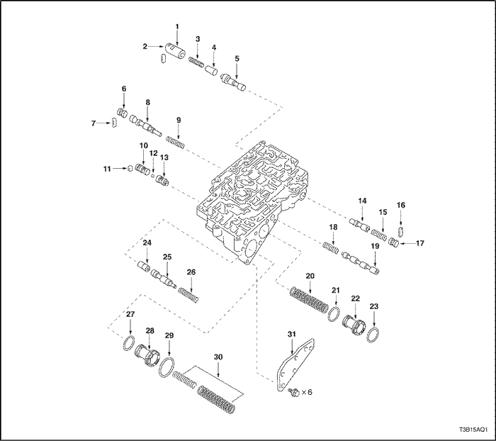
- Manguito
- Chaveta
- Muelle
- Buzo
- Válvula de control de bloqueo
- Tapón
- Chaveta
- Válvula reguladora secundaria
- Muelle
- Válvula antirretorno nº 2
- Chaveta
- Bola
- Válvula antirretorno nº 1
- Válvula de control inverso
- Muelle
- Chaveta
- Tapón
- Muelle
- Válvula de cambio 3-4
- Muelle
- Junta tórica
- Pistón acumulador del embrague inverso
- Junta tórica
- Buzo
- Válvula de sincronización del cambio de tercera a cuarta
- Muelle
- Junta tórica
- Pistón del acumulador del segundo freno
- Junta tórica
- Muelle
- Tapa superior del cuerpo de válvulas
Muelle de cuerpo superior de válvulas
- Durante el remontaje, por favor consulte las siguientes especificaciones de muelles que le ayudarán aun a mejor discriminación entre los diferentes tipos de muelles.
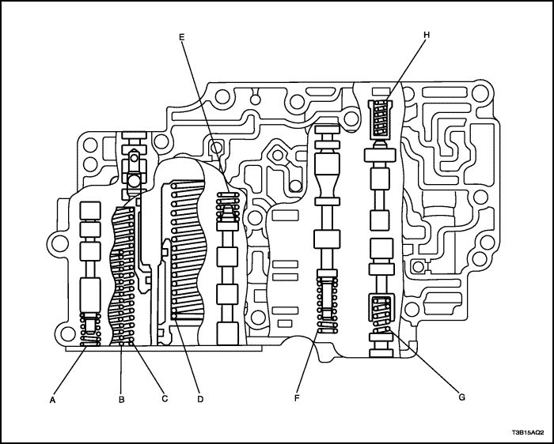
Marca | Nombre (Color) | Longitud sin carga / diámetro exterior mm (pulg.) | Número total de bobinas |
A | Válvula de sincronización de cambio 3-4 (rosado) | 28.41 (1.1185) / 6.4 (0.252) | 10.49 |
B | Pistón del acumulador del segundo freno, (ninguno) Interior | 45.90 (1.8071) / 10.5 (0.413) | 16.9 |
C | Pistón del acumulador del segundo freno, (blanco) Exterior | 69.00 (2.7165) / 16.0 (0.630) | 15.1 |
D | Pistón acumulador del embrague inverso (ninguno) | 65.40(2.5748) / 17.0 (0.669) | 13.7 |
E | Válvula de cambio 3-4 (Rojo) | 25.50 (1.0039) / 9.73 (0.3831) | 7.75 |
F | Válvula reguladora secundaria (Blanco) | 34.56 (1.3606) / 8.8 (0.346) | 12.27 |
G | Válvula de control inverso (Ninguno) | 25.58 (1.0071) / 8.64 (0.3402) | 8.75 |
H | Válvula de control de bloqueo (Amarillo) | 20.87 (0.8217) / 5.55 (0.2185) | 11.15 |
Chaveta superior del cuerpo de válvulas
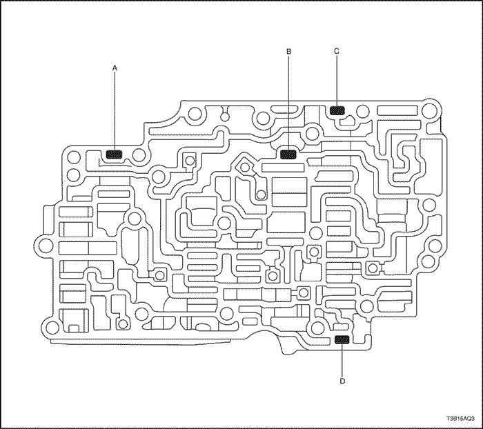
Marca | Retén | Altura/Anchura/Espesor mm (pulg.) |
A | Válvula antirretorno | 11.5 (0.453) / 5.0 (0.197) / 3.2 (0.126) |
B | Válvula reguladora secundaria | 16.0 (0.630) / 5.0 (0.197) / 3.2 (0.126) |
C | Válvula de control de bloqueo | 16.0 (0.630) / 5.0 (0.197) / 3.2 (0.126) |
D | Válvula de control inverso | 11.5 (0.453) / 5.0 (0.197) / 3.2 (0.126) |
Bola antirretorno superior del cuerpo de válvulas
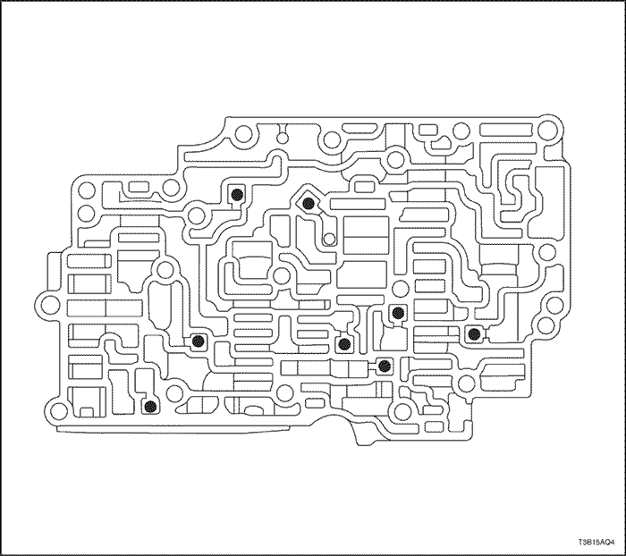
Bola antirretorno mm (pulg.) | 5.535 (0.21791) |
Cuerpo de válvula inferior
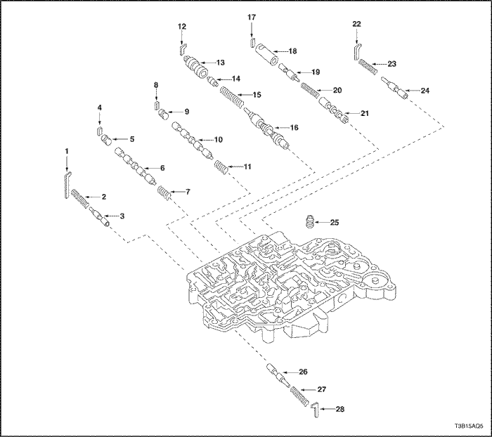
- Chaveta
- Muelle
- Válvula de sincronización de cambio 4-3
- Chaveta
- Tapón
- Válvula de cambio 2-3
- Muelle
- Chaveta
- Tapón
- Válvula de cambio 1-2
- Muelle
- Chaveta
- Manguito
- Buzo
- Muelle
- Válvula reguladora primaria
- Chaveta
- Manguito
- Buzo
- Muelle
- Válvula de relé de bloqueo
- Chaveta
- Muelle
- Válvula de solenoide modulador
- Solenoide de colador de aceite
- Válvula modulador inferior
- Muelle
- Chaveta
Muelle de cuerpo de válvulas inferior
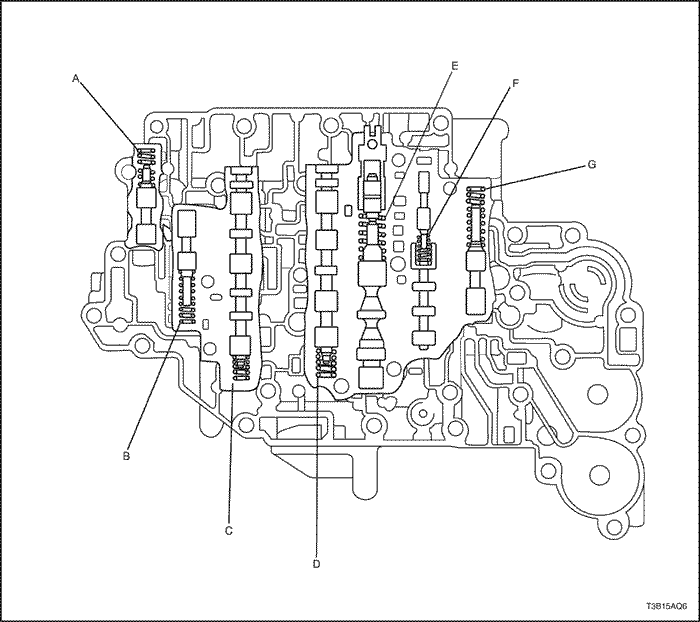
Marca | Nombre (Color) | Longitud sin carga / diámetro exterior mm (pulg.) | Número total de bobinas |
A | Válvula de sincronización de cambio de cuarta a tercera nº 1 (Ninguna) | 33.95 (1.3366) / 8.2 (0.323) | 12.5 |
B | Válvula modulador inferior (Ninguno) | 30.43 (1.1980) / 7.75 (0.3051) | 12.72 |
C | Válvula de cambio 2-3 (Rojo) | 25.50 (1.0039) / 9.73 (8.1694) | 7.75 |
D | Válvula de cambio 1-2 (Rojo) | 25.50 (1.0039) / 9.73 (8.1694) | 7.75 |
E | Válvula reguladora primaria (Ninguno) | 50.53 (1.9894) / 13.6 (0.535) | 11.07 |
F | Válvula reguladora primaria (Rojo) | 23.42 (0.9221) / 5.86 (0.2307) | 12.25 |
G | Válvula de solenoide modulador (Amarillo) | 32.13 (1.2650) / 8.0 (0.315) | 15.75 |
Chaveta inferior del cuerpo de válvulas
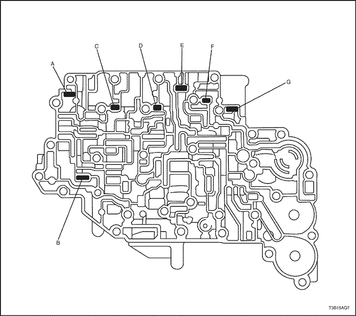
Marca | Retén | Altura/Anchura/Espesor mm (pulg.) |
A | Válvula de sincronización de cambio de cuarta a tercera nº 1 | 36.0 (1.417) / 5.0 (0.197) / 3.2 (0.126) |
B | Válvula modulador inferior | 24.0 (0.945) / 5.0 (0.197) / 3.2 (0.126) |
C | Válvula de cambio 2-3 | 10.0 (0.394) / 5.0 (0.197) / 3.2 (0.126) |
D | Válvula de cambio 1-2 | 10.0 (0.394) / 5.0 (0.197) / 3.2 (0.126) |
E | Válvula reguladora primaria | 9.8 (0.386) / 5.2 (0.205) / 3.2 (0.126) |
F | Válvula de relé de bloqueo | 16.0 (0.630) / 5.0 (0.197) / 3.2 (0.126) |
G | Válvula de solenoide modulador | 24.0 (0.945) / 5.0 (0.197) / 3.2 (0.126) |
Caja del diferencial
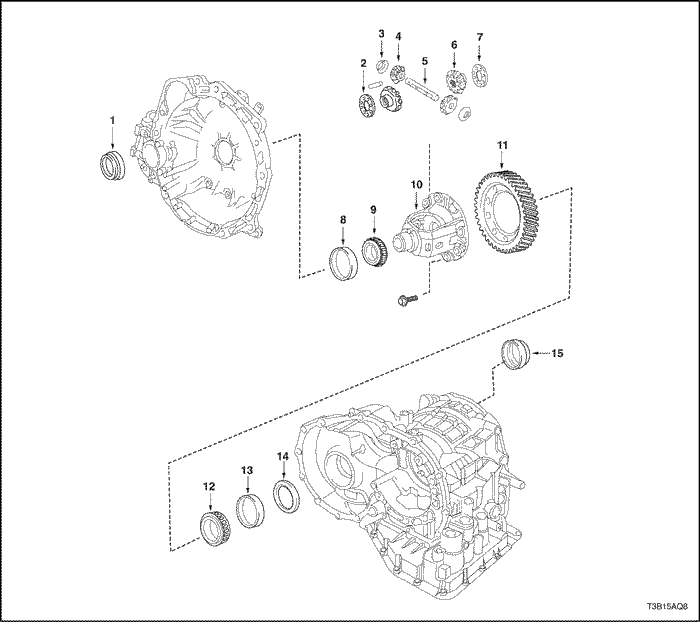
- Arandela de empuje de piñón del diferencial
- Piñón del diferencial
- Arandela de empuje del engranaje lateral del diferencial
- Engranaje lateral del diferencial
- Clavija
- Eje del piñón del diferencial
- Retén de aceite
- Aro de rodamiento exterior de cojinete lateral
- Cojinete cónico de rodillo
- Caja del diferencial
- Corona del diferencial
- Cojinete cónico de rodillo
- Aro de rodamiento exterior de cojinete lateral
- Arandela de ajuste
- Retén de aceite
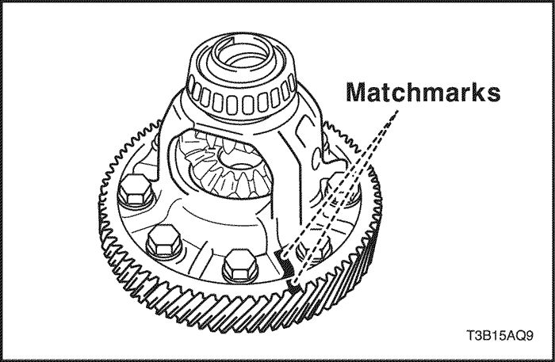
Herramientas necesarias
DW260-031-01 Instalador de retén de aceite de la carcasa de la caja de cambios
DW260-031-02 Instalador de retén de aceite de la carcasa de la caja de cambios
DW240-150 Adaptador de la pista exterior del cojinete lateral de la carcasa de la caja de cambios
DW240-140 Adaptador de la pista exterior del cojinete lateral de la carcasa de la caja de cambios
DW240-170 Mango del adaptador
Procedimiento de desmontaje
- Haga marcas de alineación en la corona y en la caja del diferencial.
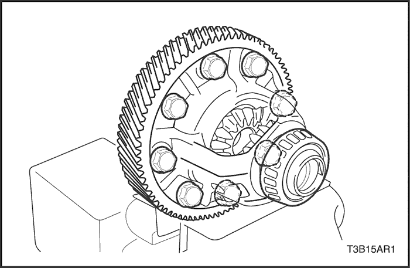
- Desmonte los 8 tornillos.
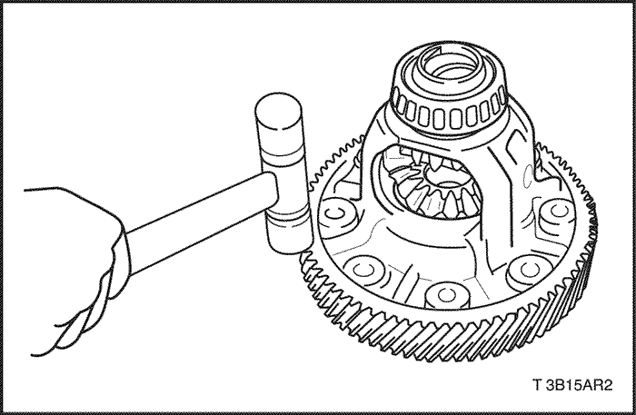
- Golpee suavemente la corona con un martillo de plástico, para desmontarla de la caja.
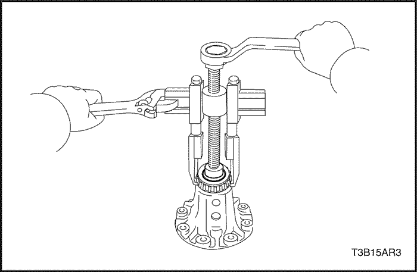
- Desmonte el cojinete de rodillos cónicos del costado de la carcasa de la caja de cambios, utilizando un extractor apropiado.
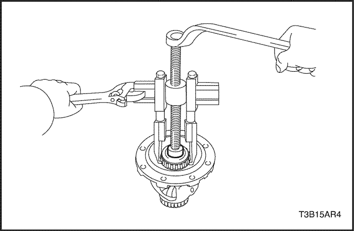
- Desmonte el cojinete de rodillos cónicos del costado de la carcasa de la caja de cambios, utilizando un extractor apropiado.
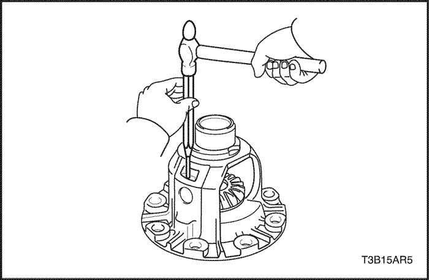
- Extraiga el pasador, por el lado de la corona, utilizando un botador y un martillo.
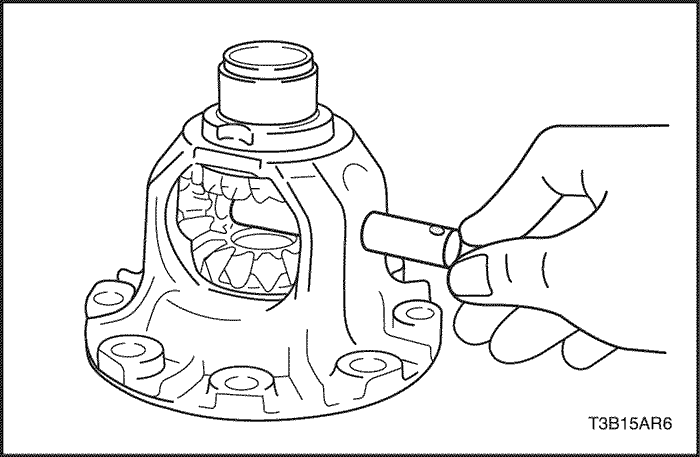
- Retire de la caja el eje del piñón del diferencial.
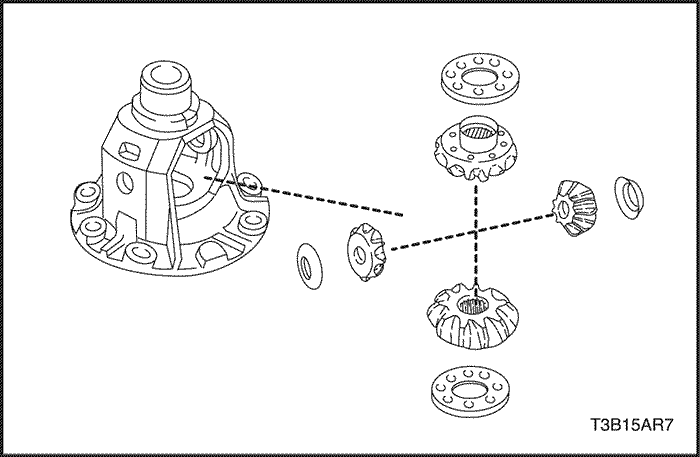
- Desmonte los 2 piñones laterales del diferencial, los 2 engranajes laterales del diferencial, las 2 arandelas de empuje de los piñones y las 2 arandelas de empuje de los engranajes laterales del diferencial.
- Desmonte el retén de aceite de la carcasa de la caja de cambios, utilizando un destornillador.
Aviso: Tenga cuidado de no dañar la carcasa de la caja de cambios al desmontar el retén de aceite con un destornillador.

- Desmonte la pista exterior del cojinete lateral, de la carcasa de la caja de cambios, utilizando un extractor apropiado.

- Desmonte el retén de aceite de la carcasa de la caja de cambios, utilizando un destornillador.
Aviso: Tenga cuidado de no dañar la carcasa de la caja de cambios al desmontar el retén de aceite con un destornillador.

- Desmonte la pista exterior del cojinete lateral de la carcasa de la caja de cambios y la arandela de ajuste, utilizando el adaptador de la pista exterior de cojinete lateral de la carcasa de la caja de cambios DW240-150 y el mango adaptador DW240-170.

Procedimiento de montaje
- Monte una pista exterior de cojinete lateral nueva en la carcasa de la caja de cambios, utilizando el adaptador de pista exterior de cojinete lateral de la carcasa de la caja de cambios DW240-140 y el mango adaptador DW240-170.
- Monte la arandela de ajuste en la carcasa de la caja de cambios.
Aviso: Primero instale un asiento del mismo espesor que el anterior.
- Monte una pista exterior de cojinete lateral nueva, en la carcasa de la caja de cambios.
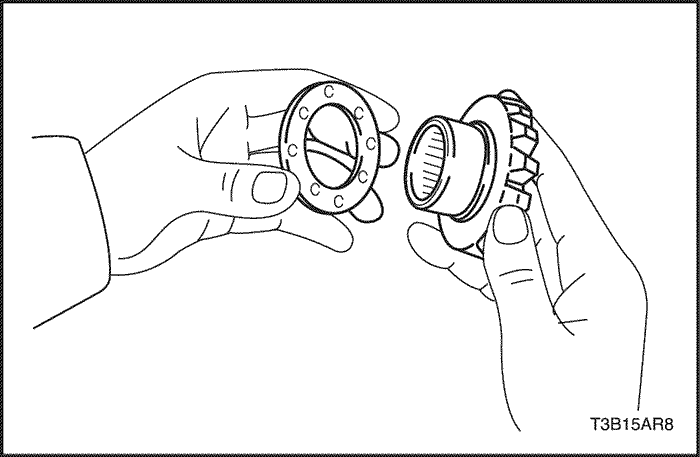
- Cubra con ATF las arandelas de empuje, engranes laterales, engranes de piñón y las arandelas de empuje de piñón.
- Monte las 2 arandelas de empuje de los engranajes laterales del diferencial en esos 2 engranajes laterales.
- Monte los 2 engranajes laterales del diferencial con sus 2 arandelas de empuje, los 2 piñones y las 2 arandelas de empuje en la caja del diferencial.
- Cubra el eje del piñón con ATF.
- Instale el eje del piñón de manera que queden alineados los orificios del pasador en el eje del piñón y en la caja del diferencial.
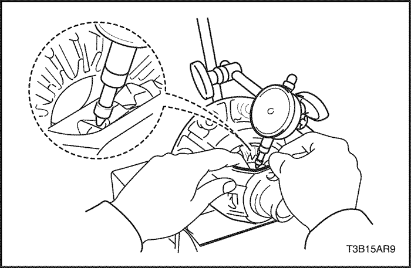
- Mida la holgura de los engranajes laterales empujando 1 de los piñones contra la caja del diferencial.
- 0.05 - 0.20 mm (0.0020-0.0079")
- Si la holgura estuviera fuera de los valores especificados, monte la arandela de empuje adecuada en el engranaje lateral.
- Consulte la siguiente tabla para seleccionar la arandela de empuje que asegure que la holgura queda dentro de la especificación.
- Trate de elegir arandelas del mismo tamaño para ambos lados.
- Espesor de arandela de empuje: mm (pulg.)
Grosor | Grosor |
0.95 (0.0374) | 1.10 (0.0433) |
1.00 (0.0394) | 1.15 (0.0453) |
1.05 (0.0413) | 1.20 (0.0472) |
- Si la holgura no está dentro de la especificación, coloque una arandela de empuje de diferente espesor.
- Encaje una nueva clavija en el eje del piñón, a través de la caja y el orificio, utilizando un punzón y martillo.
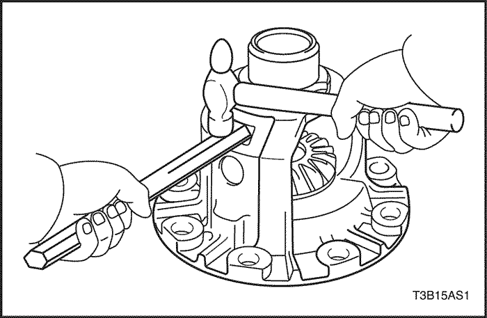
- Enclave la caja del diferencial utilizando martillo y cincel.
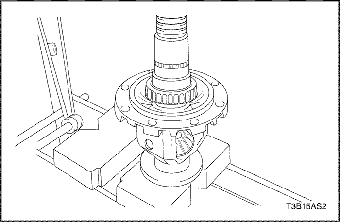
- Instale el cojinete de rodillos cónicos en la caja del diferencial utilizando una prensa.
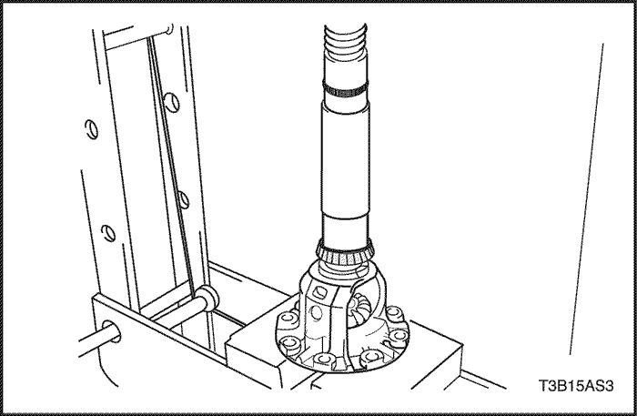
- Instale el cojinete de rodillos cónicos en la caja del diferencial utilizando una prensa.
- Retire todo el material de la junta líquida y tenga cuidado de que no caiga aceite sobre las superficies de contacto de la carcasa de la caja de cambios o el alojamiento de la misma.
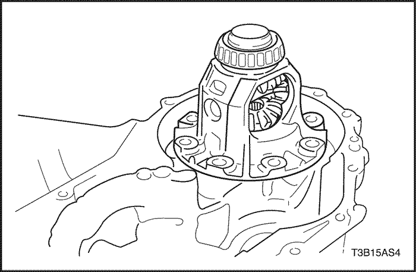
- Monte el diferencial en la carcasa de la caja de cambios.

- Monte la carcasa de la caja de cambios, con sus 16 tornillos, de manera provisional.
- Apriete completamente 8 ó 9 de los 16 tornillos de la carcasa de la caja de cambios.
Apretar
Apriete los tornillos a 29 N•m (22 lbs-pie).

- Con auxilio del adaptador de precarga del diferencial DW240-130, haga girar hacia la izquierda y derecha el engranaje diferencial 2 o 3 veces para permitir que se asiente el cojinete.

- Mida la precarga del engranaje diferencial, utilizando el adaptador de precarga del diferencial DW240-130 y una llave dinamométrica pequeña.
- Cojinete nuevo: 0,78 - 1,37 Nm (6,9 - 12,2 lbs-pulg.)
- Cojinete usado: 0,39-0,69 Nm (3,5-6,1 lb-pulg.)
- Si la precarga no está dentro de los valores especificados, desmonte el diferencial de la carcasa de la caja de cambios. Vuelva a seleccionar otro calce de ajuste lateral de la carcasa de la caja de cambios, de acuerdo con la siguiente tabla.
- Ajuste del espesor de la arandela de ajuste: mm (pulg.)
Marca | Grosor | Marca | Grosor |
A | 1.80 (0.0709) | N | 2.26 (0.0890) |
B | 1.85 (0.0728) | P | 2.29 (0.0902) |
C | 1.90 (0.0748) | Q | 2.32 (0.0913) |
D | 1.95 (0.0768) | R | 2.35 (0.0925) |
E | 2.00 (0.0787) | S | 2.40 (0.0945) |
F | 2.05 (0.0807) | T | 2.45 (0.0965) |
G | 2.08 (0.0819) | U | 2.50 (0.0984) |
H | 2.11 (0.0831) | V | 2.55 (0.1004) |
J | 2.14 (0.0843) | W | 2.60 (0.1024) |
K | 2.17 (0.0854) | X | 2.65 (0.1043) |
L | 2.20 (0.0866) | Y | 2.70 (0.01063) |
M | 2.23 (0.0878) | . | . |
- Desmonte los 16 tornillos de la carcasa de la caja de cambios y la carcasa, utilizando un martillo de plástico.
- Desmonte el diferencial, de la carcasa de la caja de cambios.
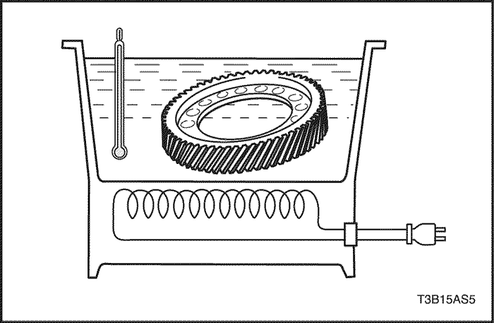
- Limpie la superficie de contacto de la caja del diferencial.
- Caliente la corona en agua y deje que hierva durante 10 minutos.
- Saque la corona del agua, con cuidado.
- Después de que se haya evaporado completamente la humedad de la corona, móntela rápidamente en la caja del diferencial.
- Monte los 8 tornillos.
Apretar
Apriete los tornillos a 102 N•m (75 lbs-pie).

- Monte un retén de aceite nuevo en la carcasa de la caja de cambios, utilizando el instalador de retén de aceite de la carcasa de la caja de cambios DW260-031-01 y un martillo.
- Profundidad del retén de aceite: 3,1 mm (0,122 pulg.)

- Monte un retén de aceite nuevo en la carcasa de la caja de cambios, utilizando el instalador del retén de aceite de la carcasa de la caja de cambios DW260-031-02.
- Profundidad del retén de aceite: 4,3 mm (0,169 pulg.)
 | |  | |
| © Copyright Chevrolet Europe. Reservados todos los derechos |